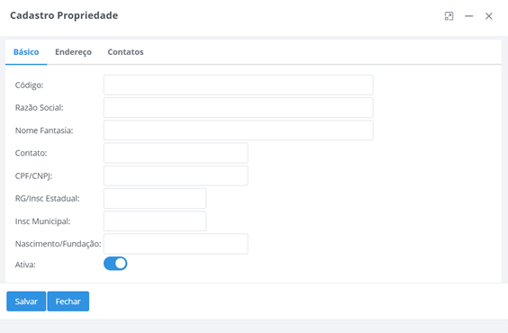

Cadastros
Transportadores
Essa função tem como característica cadastrar, alterar e excluir os transportadores.

Principais Campos e Parâmetros:
Código- Permite inserir o código do transportador.Razão Social- Permite inserir o nome do transportador.Nome Fantasia- Permite inserir o nome fantasia do transportador.Contato- Permite inserir o contato do transportador.Documento- Permite inserir o número do documento do transportador.Insc Estadual- Permite inserir a inscrição estadual do transportador.Insc Municipal- Permite inserir a inscrição municipal do transportador.Nascimento/Fundação- Permite inserir a data de fundação do transportador.Endereço- Permite inserir o endereço do transportador.Número- Permite inserir o número do endereço do transportador.Bairro- Permite inserir o bairro do transportador.Complemento- Permite inserir o complemento do transportador.Estado- Permite selecionar o estado do transportador.Cidade- Permite selecionar a cidade do transportador.CEP- Permite inserir o CEP da cidade.Email- Permite inserir o e-mail do transportador.Telefone Fixo- Permite inserir o telefone do transportador.Telefone- Permite inserir o celular do transportador.Senha- Permite inserir uma senha para o transportador.
Sincronizar Cadastro: Ao selecionar esta opção é possível sincronizar os cadastros de transportadores com sistemas externos, de acordo com as parametrizações informadas nos “Parâmetros de Integração”.
Importar arquivo: Para sincronizar os cadastros com um arquivo são necessários requisitos para que essa função seja bem-sucedida.
A opção Integra Arquivo na função Parâmetros Coleta Leite deve ser marcada.
O arquivo deve ser salvo em .txt com o nome de transportador e deve seguir o layout abaixo para que a sincronização seja realizada.
codigo;cnpj;razaosocial;nomefantasia;endereco;numero;complemento;pontoreferencia;codmunicipioibge;cidade;estado;uf;pais;bairro;cep;inscricaoestadual;telefone;celular;email;inscricaomunicipal
100;9999999999999;Transportador RF;RF;RF Solution IT;SN;;;4113601;Lobato;Paraná;PR;Brasil;Centro;86790000;999999999;4432498015;;rf@rfsolutionit.com.br;999999999
Questionário
Essa função tem como característica cadastrar, alterar e excluir questionários.
Na tela abaixo, é possível selecionar o período em que o questionário estará ativo.

Ao alterar um questionário, permite cadastrar, alterar ou inativar as categorias, perguntas e possíveis respostas para o questionário.
Principais Campos e Parâmetros:
Descrição- Permite informar a descrição do questionátio.Categorias- Permite informar as categorias de perguntas do questionário.Perguntas- Permite informar as perguntas relacionadas a categoria.
Para cadastrar uma nova pergunta, selecione a categoria desejada, clique no botão destacado abaixo:
Principais Campos e Parâmetros:
Descrição- Permite informar a descrição da pergunta.-
Tp Resposta- Permite informar o tipo de resposta para essa pergunta, sendo elas:- Escolha Uma: permitirá que a pergunta tenha somente uma resposta, por exemplo: Sim ou Não.
- Multipla Escolha: permitirá que a pergunta aceite mais de uma resposta.
- Texto: permitirá que a pergunta aceite uma resposta de texto curto.
- Combo: permitirá que o técnico selecione uma das respostas parametrizadas.
- Data: permitirá que a pergunta aceita somente data como resposta.
Ativa- Caso desativado a pergunta não irá aparecer no questionário.Tamanho Máximo- Permite definir um tamanho máximo de resposta para essa pergunta, utilizado em perguntas do tipo texto, caso contrário pode definir como zero.
Após cadastrado as perguntas, é obrigatório cadastrar as opções de resposta para essas perguntas, conforme exemplos abaixo:
Principais Campos e Parâmetros:
Descrição- Permite informar a descrição da resposta.Valor Resposta- O valor da resposta será definido de acordo com o tipo da pergunta, sendo elas:- Escolha Uma: o valor da resposta deverá ser "true" para Sim e "false" para Não.
- Multipla Escolha: o valor da resposta deverá ser "text".
- Texto: o valor da resposta deverá ser "text".
- Combo: o valor da resposta deverá ser "text".
- Data: o valor da resposta deverá ser "date".
Cor- Defina uma cor para agradar a visualização da resposta para o usuário no momento de consultar as resposta no aplicativo e no sistema web.
Exemplos:
-
Sim, defina "Verde"
-
Não, defina "Vermelho"
-
Texto, defina "Preto"
Importante: Caso houver alguma pergunta que será necessário informar apenas números defina o tipo de resposta do tipo "Texto" e no valor da resposta defina "number".
Propriedade
Essa função tem como característica cadastrar, alterar e excluir as propriedades.

Principais Campos e Parâmetros:
Código- Permite inserir o código da propriedade.Razão Social- Permite inserir o nome da propriedade.Nome Fantasia- Permite inserir o nome fantasia da propriedade.Contato- Permite inserir o contato da propriedade.Documento- Permite inserir o documento da propriedade.Insc Estadual- Permite inserir o número da inscrição estadual da propriedade.Insc Municipal- Permite inserir o número da inscrição municipal da propriedade.Nascimento/Fundação- Permite inserir a data de fundação da propriedade.Ativa- Permite marcar a opção caso a propriedade for ativa.Endereço- Permite inserir o endereço da propriedade.Número- Permite inserir o número do endereço da propriedade.Bairro- Permite inserir o bairro da propriedade.Complemento- Permite inserir o complemento da propriedade.Estado- Permite selecionar o estado da propriedade.Cidade- Permite selecionar a cidade da propriedade.Cep- Permite inserir o CEP da cidade.Latitude- Permite informar a latitude da propriedadeLongitude- Permite informar a longitude da propriedadeEmail- Permite inserir o e-mail da propriedade.Telefone Fixo- Permite inserir o número do telefone da propriedade.Celular- Permite inserir o número do celular da propriedade.Observações- Permite inserir observações da propriedade.Prop. Benificiária- Permite informar uma propriedade beneficiária, ao qual será destinado os lançamento durante a sincronização dos movimento.Senha- Permite informar a senha da propriedade para acesso ao aplicativo Milkroute – Produtor.
A opção Integra Arquivo na função Parâmetros Coleta Leite deve ser marcada. O arquivo deve ser salvo em .txt com o nome de propriedade e deve seguir o layout abaixo para que a sincronização seja realizada.
codigo;cnpj;razaosocial;nomefantasia;endereco;numero;complemento;pontoreferencia;codmunicipioibge;cidade;estado;uf;pais;bairro;cep;inscricaoestadual;telefone;celular;email;inscricaomunicipal;nomepropriedade;ativa;latitude;longitude
1;99999999999999;Propriedade RF;RF;RF Solution IT;SN;;;4113601;Lobato;Paraná;PR;Brasil;Centro;86790-000;999999999;(44)3249-8015;;rf@teste.com.br;999999999;Propriedade RF;true;-23,0076315;-51,9421515
1;99999999999999;João Pedro da Silva;João Pedro da Silva;RF Solution IT;SN;;;4113601;Lobato;Paraná;PR;Brasil;Centro;86790-000;999999999;(44)3249-8015;;joao@teste.com.br;999999999;Propriedade RF;true;-23,0076315;-51,9421515
Rotas
Essa função tem como característica cadastrar, alterar e excluir as rotas.

Principais Campos e Parâmetros:
Código- Permite inserir o código da rota.Denominação- Permite inserir a denominação da rota.Estabelec- Permite selecionar o estabelecimento da rota.Veículo- Permite selecionar um os mais veículos da rota.Ativa- Permite informar se a rota esta ativa.Valida Raio Localização- Permite informar se a rota irá realizar validação de localização das propriedades. Este parâmetro será ignorado, caso as propriedades gerais estiverem ativas.Sub Rota- Permite informar se o cadastro será de uma sub-rota.Rota Principal- Ao marcar a opção de Sub-Rota, será obrigatório informar uma rota principal.Propriedades- Permite inserir as propriedades vinculadas a rota.
A opção Integra Arquivo na função Parâmetros Coleta Leite deve ser marcada. O arquivo deve ser salvo em .txt com o nome de rota e deve seguir o layout abaixo para que a sincronização seja realizada.
codigoestabel;codigotransportador;codigorota;denominacao;ativa;codigopropriedade;propriedadebloqueada
999;2016;11;Linha Lobato;true;2016;false
999;2016;11;Linha Lobato;true;289188;false
999;2016;11;Linha Lobato;true;289181;false
999;2016;11;Linha Lobato;true;286438;false
999;2016;11;Linha Lobato;true;282171;false
999;2016;11;Linha Lobato;true;203840;false
999;2016;11;Linha Lobato;true;203782;false
999;2016;11;Linha Lobato;true;205574;false
999;2016;11;Linha Lobato;true;285573;false
999;2016;11;Linha Lobato;true;285453;false
999;2016;11;Linha Lobato;true;284734;false
Veículo
Essa função tem como característica cadastrar, alterar e excluir os veículos.

Principais Campos e Parâmetros:
Placa- Permite inserir a placa do veículo.Descrição- Permite inserir a descrição do veículo.Transportador- Permite selecionar o transportador do veículo.Tipo- Permite selecionar o tipo de veículo.Compartimentos- Permite informar os compartimentos e capacidade do veículo.